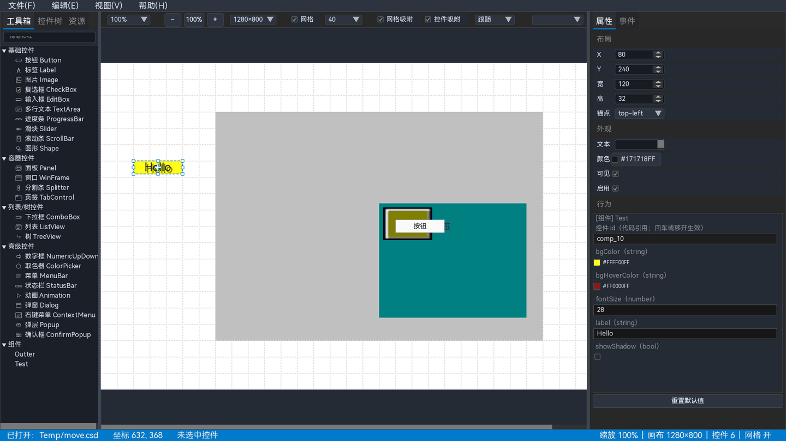
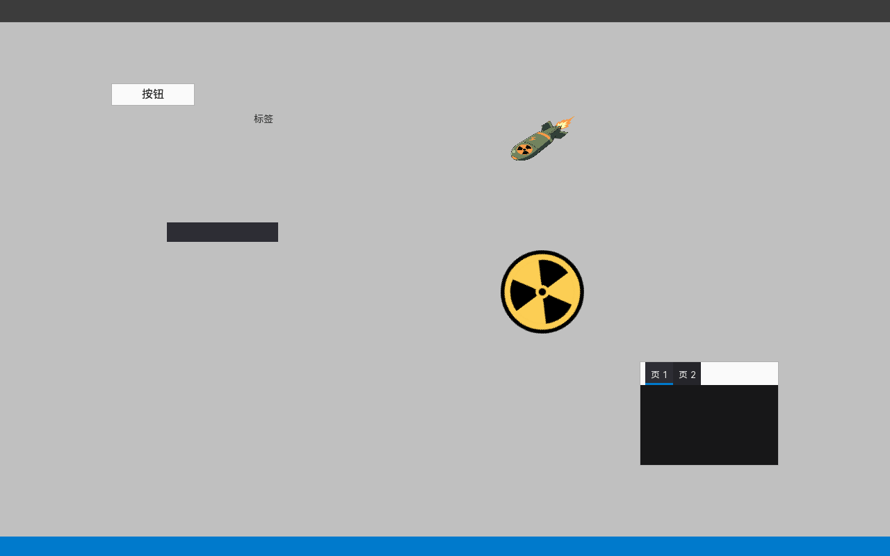

3 快速开始
这一章用一个最小示例完成完整流程：新建工程 → 放置按钮 → 修改属性 → 绑定事件 → 预览 → 保存 → 导出。全程约 10 分钟。

图 3-1 设计状态：画布、工具箱和属性面板同时可见
3.1 新建工程
- 选择 。
- 画布恢复为空白，标题栏显示“未命名 — CornerstoneDesigner”。
- 右侧状态栏显示“放置目标：画布根”，表示接下来放置的控件会成为画布根级控件。
3.2 放置一个按钮
- 在左侧工具箱找到“基础控件 → 按钮 Button”。
- 双击“按钮 Button”，或把它拖到画布上。
- 按钮出现在画布上并自动被选中；右侧属性面板显示这个按钮的属性。
- 如果位置不理想，直接拖动按钮本体移动；拖动八个控制点调整大小。
放置时状态栏会显示当前放置目标。若目标是某个 Panel 或 Tab 页，控件会成为它的子控件；若要放到画布根，先点击画布空白处或根节点。
3.3 修改属性
- 保持按钮选中，在右侧“属性”页签查看“布局”和“外观”。
- 把 X、Y 改成合适的位置；把“宽”“高”改成需要的大小。
- 在“文本”中输入按钮标题，例如“保存”。
- 在“颜色”中修改背景色或文字色；颜色以
#RRGGBBAA显示。 - 继续在“行为”区域修改该控件支持的其他属性。
属性修改会实时写回画布。连续编辑同一属性会合并为一次撤销记录；需要撤销时使用 Ctrl+Z。
3.4 绑定事件
- 保持按钮选中，点击右侧的“事件”页签。
- 在“事件”下拉框选择事件类型，例如按钮的点击事件。
- 在 handler 输入框填写函数名，例如
onSaveClick；也可以点击“建议命名”生成一个。 - 点击“添加绑定”。
- 下方“已绑定”列表出现一行：控件、事件、handler 和操作按钮。
handler 名称必须是合法的 C/C++ 标识符，并尽量保持唯一。冲突或非法名称会在事件面板中提示，并阻止导出。
3.5 预览
- 选择 ，或按 F5。
- 设计器打开一个独立的预览窗口，按运行时效果显示当前布局。
- 在预览窗口中操作控件；它使用独立的 UICornerstone 实例，不会改动设计器画布。
- 再次按 F5 或关闭预览窗口退出预览。

图 3-2 预览显示最终布局与控件效果（示例项目）
3.6 保存工程
- 选择 。
- 第一次保存会弹出文件对话框；选择目录并输入文件名，扩展名为
.csd。 - 保存成功后窗口标题显示项目文件名，未保存标记
*消失。 - 以后再次保存会直接写入当前文件；需要另存时使用 。
最近打开的项目会出现在 中，最多 10 个；失效路径会在打开时自动移除。
3.7 导出
| 导出方式 | 菜单 | 产物 |
|---|---|---|
| 布局 JSON | 文件 → 导出 JSON | UICornerstone 可直接加载的布局文件 |
| C 工程 | 文件 → 导出为可编译C项目 | 裸 C ABI 宿主、事件代码、资源与构建脚本 |
| C++ 工程 | 文件 → 导出为可编译C++项目 | C++ Binding 宿主、binding 包、事件代码与构建脚本 |
| 项目报告 | 文件 → 导出项目报告 | report.md + 布局截图 |
- 选择 。
- 选择空目录；设计器生成宿主工程与运行依赖。
- 按导出目录中的构建脚本编译并运行，验证界面与事件。
3.8 完成检查
- 画布中的按钮位置、大小、文本与预期一致。
- 事件页签能看到刚才的绑定，handler 名称无冲突。
- 预览窗口显示同样的布局。
- 保存后重新打开
.csd，控件与绑定仍然存在。 - 导出 JSON 能被 UICornerstone 加载。
如果某一步结果不对，先看右下角状态栏和设计器控制台日志；再查 故障排查。